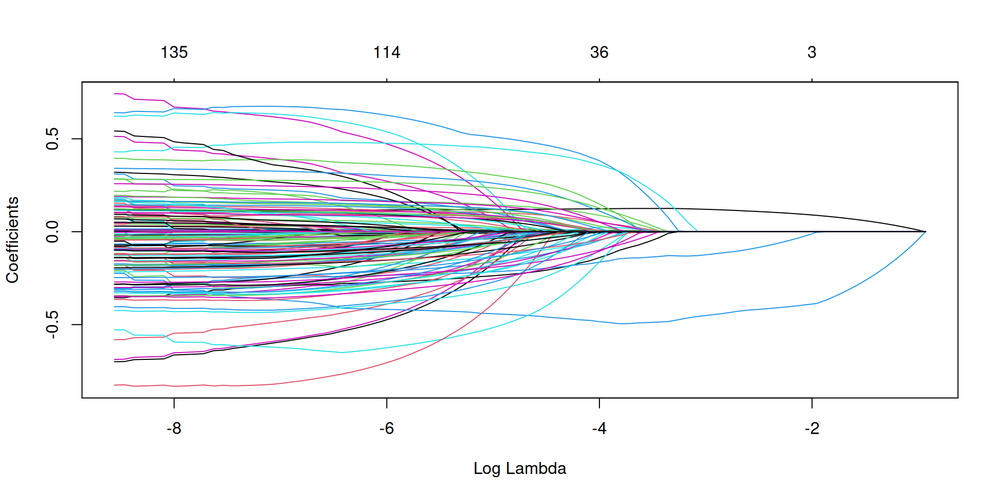

Código
library(glmnet)
library(dplyr)
library(caret)
# Datos: alojamientos AIRBNB en la ciudad de Valencia
url <- "https://juandmontoro.github.io/bigDataEco/data/airbnb.csv"
data <- read.csv(url)
# Realizamos una partición de datos: entrenamiento(70%)/prueba(30%)
# Semilla aleatoria para reproducibilidad
set.seed(123)
train_ratio <- 0.8
n <- nrow(data)
train_indices <- sample(seq_len(n), size = floor(train_ratio * n))
train <- data[train_indices, ]
test <- data[-train_indices, ]
# Definimos respuesta y matriz de predictores
X_train = train|> select(-price) |> as.matrix()
y_train= log(train$price)
X_test = test|> select(-price) |> as.matrix()
y_test= log(test$price)
# Ajustamos un modelo lasso (alpha=1)
fit_lasso <- glmnet(X_train, y_train, family = "gaussian",alpha=1)
# Se observa inestabilidad de los predictores conforme algunos se anulan
# (colinealidad)
plot(fit_lasso,xvar='lambda')
Código
[1] 0.002841504